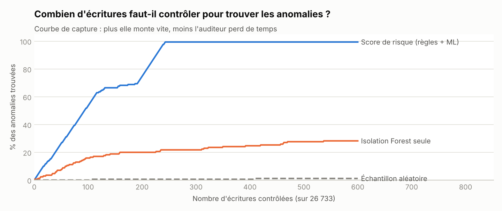
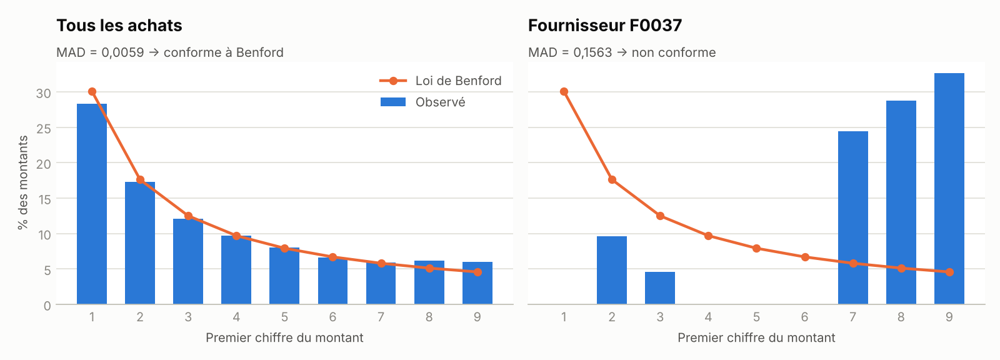

La démarche
Un auditeur ne peut pas vérifier 26 000 écritures. L'outil les classe par niveau de risque pour constituer un échantillon ciblé plutôt qu'aléatoire.
Le gain pour l'auditeur
En contrôlant les 300 écritures les plus risquées, on retrouve 99,4 % des 170 anomalies injectées, contre 0,6 % au hasard. Les règles d'audit et le machine learning sont complémentaires : le ML seul est nettement moins efficace.

Loi de Benford : repérer des montants « inventés »
Dans des données comptables naturelles, le premier chiffre des montants suit la loi de Benford (≈ 30 % de « 1 »). L'ensemble des achats est conforme (MAD 0,0059, conformité forte), mais en mesurant la contribution de chaque fournisseur à l'écart, F0037 ressort en tête : ses montants commencent anormalement souvent par 7, 8 ou 9. C'est une piste d'investigation, pas une preuve.

Top 20 des écritures à contrôler
| Écriture | Date | Journal | Tiers | Montant | Score | Motifs |
|---|---|---|---|---|---|---|
| ACH005308 | 03/11/2025 | ACH | F0024 | 4 876,16 € | 9.76 | doublon, fractionnement |
| ACH000593 | 03/02/2025 | ACH | F0028 | 4 514,37 € | 9.75 | doublon, fractionnement |
| ACH001861 | 14/04/2025 | ACH | F0044 | 15 099,29 € | 9.47 | montant atypique, validation tardive |
| ACH001304 | 14/03/2025 | ACH | F0044 | 45 630,00 € | 7.0 | montant atypique |
| VTE001362 | 28/02/2025 | VTE | 1 465,21 € | 6.98 | déséquilibre | |
| ACH003428 | 18/07/2025 | ACH | F0036 | 76,07 € | 6.6 | doublon |
| ACH005416 | 10/11/2025 | ACH | F0005 | 107,61 € | 6.44 | doublon |
| ACH002508 | 26/05/2025 | ACH | F0044 | 44 588,60 € | 6.41 | montant atypique |
| ACH000689 | 07/02/2025 | ACH | F0029 | 7 042,45 € | 6.38 | montant atypique |
| ACH003662 | 31/07/2025 | ACH | F0017 | 4 559,97 € | 6.35 | fractionnement |
| ACH004677 | 29/09/2025 | ACH | F0023 | 10 881,46 € | 6.3 | doublon |
| ACH000688 | 07/02/2025 | ACH | F0021 | 53 726,18 € | 6.3 | montant atypique |
| ACH003124 | 30/06/2025 | ACH | F0035 | 4 538,15 € | 6.29 | fractionnement |
| ACH002260 | 09/05/2025 | ACH | F0017 | 19 099,77 € | 6.27 | montant atypique |
| ACH004362 | 11/09/2025 | ACH | F0019 | 62,74 € | 6.24 | doublon |
| ACH003799 | 08/08/2025 | ACH | F0014 | 32 592,55 € | 6.22 | montant atypique |
| ACH002163 | 02/05/2025 | ACH | F0039 | 86 247,54 € | 6.22 | montant atypique |
| ACH000439 | 27/01/2025 | ACH | F0005 | 4 494,03 € | 6.2 | montant atypique |
| ACH003614 | 29/07/2025 | ACH | F0015 | 24 398,44 € | 6.18 | montant atypique |
| ACH000614 | 04/02/2025 | ACH | F0005 | 7 442,26 € | 6.18 | montant atypique |
Résultats par test d'audit
Certains tests signalent plus d'écritures que d'anomalies injectées : c'est attendu. Une facture légitime peut tomber juste sous le seuil de validation ; c'est au contrôleur de trancher, l'outil lui dit où regarder.
| Test | Injectées | Signalées | Trouvées | Rappel |
|---|---|---|---|---|
| Écriture déséquilibrée (débit ≠ crédit) | 15 | 15 | 15 | 100 % |
| Facture fournisseur saisie deux fois | 25 | 25 | 25 | 100 % |
| Factures fractionnées sous le seuil de validation | 30 | 64 | 30 | 100 % |
| Montant hors norme pour le fournisseur | 25 | 66 | 24 | 96 % |
| Validée plus de 60 jours après sa date | 25 | 25 | 25 | 100 % |
| OD manuelle à montant rond (≥ 1 000 €) | 20 | 20 | 20 | 100 % |
| Passée un week-end ou un jour férié | 30 | 30 | 30 | 100 % |
Conformité du fichier
2 contrôle(s) en échec sur 15.
| Contrôle | Détail | Statut |
|---|---|---|
| 18 colonnes réglementaires présentes | Toutes présentes | OK |
| Champ JournalCode renseigné | 0 ligne(s) vide(s) | OK |
| Champ JournalLib renseigné | 0 ligne(s) vide(s) | OK |
| Champ EcritureNum renseigné | 0 ligne(s) vide(s) | OK |
| Champ EcritureDate renseigné | 0 ligne(s) vide(s) | OK |
| Champ CompteNum renseigné | 0 ligne(s) vide(s) | OK |
| Champ CompteLib renseigné | 0 ligne(s) vide(s) | OK |
| Champ PieceRef renseigné | 0 ligne(s) vide(s) | OK |
| Champ PieceDate renseigné | 0 ligne(s) vide(s) | OK |
| Champ EcritureLib renseigné | 0 ligne(s) vide(s) | OK |
| Champ ValidDate renseigné | 0 ligne(s) vide(s) | OK |
| Chaque écriture est équilibrée | 15 écriture(s) déséquilibrée(s) | KO |
| Balance générale équilibrée | Écart total : -720.55 € | KO |
| Numérotation chronologique par journal | 0 rupture(s) | OK |
| Date de validation ≥ date d'écriture | 0 ligne(s) incohérente(s) | OK |